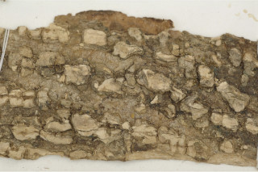
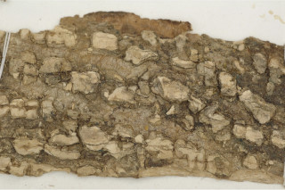

Large trees up to 16 m tall.
16 ಮೀ ಎತ್ತರದವರೆಗಿನ ದೊಡ್ಡ ಗಾತ್ರದ ಮರಗಳು.
Large trees up to 16 m tall.
மரங்கள் 16 மீ. உயரம் வரை வளரக்கூடியது.
Bark large corky lenticellate; blaze cream with orange speckels.
ತೊಗಟೆ ದೊಡ್ಡ ಗಾತ್ರದ ಬೆಂಡು ರಂಧ್ರಗಳನ್ನು ಹೊಂದಿರುತ್ತವೆ;ಕಚ್ಚು ಮಾಡಿದ ಕಿತ್ತಳೆ ಬಣ್ಣದ ಚುಕ್ಕೆಗಳನ್ನುಳ್ಳ ಕೆನೆ ಬಣ್ಣದಲ್ಲಿರುತ್ತದೆ.
Bark large corky lenticellate; blaze cream with orange speckels.
மரத்தின் பட்டை பெரியவை கார்க் போன்றது பட்டைத்துளைகள் (லெண்டிசெல்லேட்) உடையது; உள்பட்டை கீரிம் நிறமானது மற்றும் ஆரஞ்ச் நிறமான புள்ளிகளுடையது.
Branchlets terete, glabrous.
ಎಳೆಯ ಕಿರುಕೊಂಬೆಗಳು ದುಂಡಾಕಾರ ಹೊಂದಿದ್ದು ರೋಮರಹಿತವಾಗಿರುತ್ತವೆ.
Branchlets terete, glabrous.
சிறியநுனிக்கிளைகள் குறுக்குவெட்டுத் தோற்றத்தில் வளையமானது, உரோமங்களற்றது.
Leaves compound, trifoliate, alternate, spiral; rachis canaliculate in cross section, pulvinate, glabrous; petiolule 0.3-1.5 cm long, planoconvex in cross section; leaflets 7.6-25.4 x 3.8-10.2 cm, narrow elliptic, apex long acuminate with blunt tip, base slightly attenuate, margin entire, coriaceous; midrib nearly flat above; intramarginal nerves present; secondary_nerves nearly straight parallel; tertiary_nerves usually admedially ramified.
ಎಲೆಗಳು ಸಂಯುಕ್ತ ಮಾದರಿಯದಾಗಿದ್ದು ತ್ರಿಪರ್ಣಿಕೆಗಳನ್ನು ಹೊಂದಿರುತ್ತವೆ ಹಾಗೂ ಪರ್ಯಾಯ ಮತ್ತು ಸುತ್ತು ಜೋಡನಾ ವ್ಯವಸ್ಥೆಯಲ್ಲಿರುತ್ತವೆ;ಅಕ್ಷದಿಂಡು ಅಡ್ಡಸೀಳಿದಾಗ ಕಾಲುವೆಗೆರೆ ಸಮೇತವಿರುತ್ತದೆ;ಸಪಾಟ ಪೀನ ಮಧ್ಯದ ಆಕಾರ ಹೊಂದಿರುತ್ತದೆ,ಉಬ್ಬಿದ ಬುಡ ಹೊಂದಿದ್ದು ರೊಮ ರಹಿತವಾಗಿರುತ್ತದೆ;ಉಪತೊಟ್ಟುಗಳು 0.3 ರಿಂದ 1.5 ಸೆಂ.ಮೀ. ಉದ್ದಹೊಂದಿದ್ದು ಅಡ್ಡ ಸೀಳಿದಾಗ ಸಪಾಟ ಪೀನ ಮಧ್ಯದ ಆಕಾರದಲ್ಲಿರುತ್ತವೆ; ಉಪಪತ್ರಗಳು 7.6 -25.4 X 3.8 -10.2 ಸೆಂ.ಮೀ ಗಾತ್ರ, ಸಂಕುಚಿತ ಅಂಡವೃತ್ತದ ಆಕಾರ, ಮೊಂಡಾದ ಅಗ್ರವುಳ್ಳ ಉದ್ದನೆಯ ಕ್ರಮೇಣ ಚೂಪಾಗುವ ತುದಿ,ಸ್ವಲ್ಪ ಮಟ್ಟಿಗೆ ಒಳಬಾಗಿದ ಬುಡ,ನಯವಾದ ಅಂಚು, ಮತ್ತು ತೊಗಲನ್ನೋಲುವ ಮೇಲ್ಮೈ ಹೊಂದಿರುತ್ತವೆ;ಮಧ್ಯನಾಳ ಮೇಲ್ಭಾಗದಲ್ಲಿ ಹೆಚ್ಚೂ ಕಡಿಮೆ ಚಪ್ಪಟೆಯಾಗಿರುತ್ತದೆ;ಅಂತರ ಅಂಚಿನ ನಾಳಗಳು ಇರುತ್ತವೆ;ಎರಡನೇ ದರ್ಜೆಯ ನಾಳಗಳು ಹೆಚ್ಚೂ ಕಡಿಮೆ ನೇರವಾಗಿದ್ದು ಸಮಾನಾಂತರದಲ್ಲಿರುತ್ತವೆ;ಮೂರನೇ ದರ್ಜೆಯ ನಾಳಗಳ ಕವಲುಗಳು ಸಾಮಾನ್ಯವಾಗಿ ಎಲೆಗಳ ಅಕ್ಷದ ಕಡೆಗಿರುತ್ತವೆ.
Leaves compound, trifoliate, alternate, spiral; rachis canaliculate in cross section, pulvinate, glabrous; petiolule 0.3-1.5 cm long, planoconvex in cross section; leaflets 7.6-25.4 x 3.8-10.2 cm, narrow elliptic, apex long acuminate with blunt tip, base slightly attenuate, margin entire, coriaceous; midrib nearly flat above; intramarginal nerves present; secondary_nerves nearly straight parallel; tertiary_nerves usually admedially ramified.
இலைகள் கூட்டிலை, மூவ்விலை கூட்டிலைகள், மாற்றுஅடுக்கமானவை, சுழல் போன்று அமைந்தவை; மத்தியகாம்பு (ராக்கிஸ்) குறுக்குவெட்டுத் தோற்றத்தில் கேனாலிகுலேட், பல்வினேட், உரோமங்களற்றது; சிற்றிலைக்காம்பு 0.3-1.5 செ.மீ. நீளமானது, குறுக்குவெட்டுத் தோற்றத்தில் பிளேனோகான்வக்ஸ்; சிற்றிலை 7.6-25.4 X 3.8-10.2 செ.மீ., குறுகிய நீள்வட்ட வடிவானது, அலகின் நுனி நீளமான சிறிது அதிக்கூரியதுடன் அதன் முனை மழுங்கியது, அலகின் தளம் சிறிது அட்டனுவேட், அலகின் விளிம்பு முழுமையானது, கோரியேசியஸ்; மையநரம்பு கிட்டதட்ட அலகின் பரப்பிற்கு சமமானது; இண்ட்ராமார்ஜினல் நரம்பு (விளிம்பு நரம்பு) கொண்டது; இரண்டாம் நிலை நரம்புகள் கிட்டதட்ட நோரானது மற்றும் இணையானவை; மூன்றாம் நிலை நரம்புகள் அட்மீடியல்லி ராமிபைடு.
Inflorescence panicles, terminal or axillary; flowers unisexual, dioecious, sessile.
ಪುಷ್ಪಮಂಜರಿಗಳು ತುದಿಯಲ್ಲಿನ ಅಥವಾ ಅಕ್ಷಾಕಂಕುಳಿನಲ್ಲಿನ ಪುನರಾವೃತ್ತಿಯಾಗಿ ಕವಲೊಡೆಯುವ ಮಾದರಿಯವು; ಹೂಗಳು ಏಕಲಿಂಗಿಗಳಾಗಿದ್ದು, ಗಂಡು ಮತ್ತುಹೆಣ್ಣು ಹೂಗಳು ಪ್ರತ್ಯೇಕ ಸಸ್ಯಗಳಲ್ಲಿರುತ್ತವೆ ಹಾಗೂ ತೊಟ್ಟುರಹಿತವಾಗಿರುತ್ತವೆ.
Inflorescence panicles, terminal or axillary; flowers unisexual, dioecious, sessile.
மஞ்சரி பேனிக்கிள் வகை, தண்டின் நுனியில் காணப்படும் அல்லது இலைக்கோணங்களில் காணப்படுபவை; மலர்கள் ஓர் பாலானவை, ஈரகம் கொண்டவை, காம்பற்றது.
Berry, fleshy, globose, 2 celled, gland dotted; seeds 1-2 per cell.
ಬೆರ್ರಿ ಮಾಂಸಲವಾಗಿದ್ದು,ಗೋಳಾಕಾರ ಹೊಂದಿದ್ದು 2 ಕೋಶಗಳ ಸಮೇತವಿರುತ್ತವೆ ಹಾಗೂ ರಸಗ್ರಂಥಿ ಚುಕ್ಕೆಗಳ ಸಮೇತವಿರುತ್ತವೆ;ಬೀಜಗಳ ಸಂಖ್ಯೆ ಪ್ರತಿ ಕೋಶದಲ್ಲಿ1 ರಿಂದ 2 ಇರುತ್ತವೆ.
Berry, fleshy, globose, 2 celled, gland dotted; seeds 1-2 per cell.
முழுச்சதைகனி (பெர்ரி), சதைப்பற்றானது, கோள வடிவமானது, 2 அறைகளுடையது, சுரப்பி புள்ளிகளுடையது; ஒவ்வொரு அறையும் ஒர் விதையுடையது.


 
